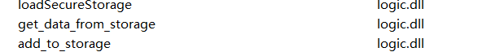

paired
解包,先得到4个文件,运行app1.exe
app1

这几个函数不用再logic.dll里面分析,动调就可以知道是设置一个有id的储存
WinMain
1 | wndclass.lpfnWndProc = (WNDPROC)WndProc; |
根据窗口类lpfnWndProc的成员根据这里找到窗口过程
STAGE 1
1 | GetWindowTextA(edit_hWnd, String, 128); |
这里获取edit控件字符串并检测,进入第二关
STAGE 2
case WM_KEYDOWN(0x100):
1 | else if ( pass_to_stage2 == 1 ) |
按键要等于’ENABLE’
进入第三关
STAGE 3
1 | case 0x400u: // WM_USER |
需要把消息WM_USER放入队列
1 | if ( pass_to_stage3 ) |
这里可以加入WM_USER消息,动调查看v7函数之后,得到输入为this_is_just_some_random_string!,是fake flag,很明显不可能只分析一个文件
app2
直接进入sub_7FF64E911210()函数分析
1 | hWnd = HWND_MESSAGE|0x2; |
这里获取id==7的储存赋值给hwnd,再看前面通过第二关时
1 | add_to_storage(1i64, hWnd); |
只有通过第二关,这里条件才为真, 接下来关注消息的发送, 这里所用的消息发送都将发送wparam==32的消息,执行id==64的代码,
1 | PostMessageA(v1, 0x400u, 0x20ui64, 0i64); |
先动调app1,进入第二关后,把断点下在第三关,然后动调app2, 运行过发送消息
1 | ((void (__fastcall *)(__int64, void **, __int64))logic_dll_add_to_storage)(3i64, &retaddr, 8i64); |
v7函数, 把基地址存为id==3的储存中, 储存完成后 app2的循环停止
1 | get_data_from_storage(2i64, v61); |
这里是长度检验, id==2是app1的输入框内容, 先判断不成立的情况, 这里的代码由随机数组成, srand(time(0)), 明显有很大问题
判断成立的情况
1 | v10 = _mm_load_si128((const __m128i *)&byte_7FF64E926630); |
一段异或加密, 到这里
1 | get_data_from_storage(2i64, v62); |
又是一段异或加密
1 | get_data_from_storage(5i64, &i); |
这里有循环条件,这是其实是rbyc, id==5的由来(app1中):
1 | __int64 sub_1AD49780000() |
输入放入id==5, 检查前面4个字节为’rbyc’, 第二次异或加密
1 | do |
然后来到swith结构, 像极了虚拟机
1 | switch ( *((_BYTE *)&unk_7FF64E910000 + index + 100864) ) // byte_7FF64E928A00 |
然后慢慢单步走, 慢慢会发现先一直都是1, 2, 然后走5, 6, 8, 3, 8, a, 接下来就又是1, 2…, 最后, 2, 3, 4
(地址只是一个临时的值,主要怎么计算得到)
case 1:
app1中的执行的代码
1 | unk_19BE3430010 = 0i64; // unk_19BE3430010 == *(id==6的数据 + byte_7FF64E928A00[index + 1]) |
case 2:
app1中的执行的代码
1 | ((void (__fastcall *)(__int64, __int64, __int64))logic_dll_add_to_storage)(7i64, 0x19BE3430070i64, 8i64); |
id == 7的数据换为(id==6的数据 + byte_7FF64E928A00[index + 1])
case 3:
1 | v25 = *(unsigned int *)((char *)&unk_7FF64E910000 + index + 100865);// *(dword *)(byte_7FF64E928A00 + index + 1) |
1 | v26 = &i; |
1 | LODWORD(l) = add_to_storage(7i64, v26); //比较结果在id == 7数据中 |
接下来会执行case 8, 将结果(1)加在 *(id==6的数据 + 8)中
这里就和app1中的加到32有点像了
case 4:
这里是最后的指令, 先前的两步2, 3, 分别是把数据给到id == 7(就是每次比较的结果相加的数据)和 将id == 7与32做比较(和app1重合了), 若为真, 则id == 7 变为1
1 | if ( l != 1 ) |
则app1中的执行的代码
1 | return 32i64; |
这样就正确了
case 5:
将id==7的数据换为*(dword *)(byte_7FF64E928A00 + index + 1)
case 6:
app1中的执行的代码
1 | unk_27DA7C30008 = 0x81818181i64; // *(id==6的数据 + byte_7FF64E928A00[index + 1]) = (id == 2的数据(input)) |
case 8:
app1中的执行的代码:
1 | ((void (__fastcall *)(__int64, __int64, __int64))logic_dll_add_to_storage)(7i64, 0x27DA7C30008i64, 8i64); |
(id == 7的数据) = *(id==6的数据 + byte_7FF64E928A00[index + 1])
app2:
1 | get_data_from_storage(7i64, &i); |
1 | for ( ii = -1i64; ii == -1; get_data_from_storage(7i64, &ii) ) |
1 | remove_data(7i64); |
case a:
1 | unk_27DA7C30010 = 0i64; |
将 id==7 赋值给*(id == 6 + 10)
综上可以发现
这里的1, 2指令中的其他一堆赋值貌似没什么用,主要就是每次取字符串的4个字节来加法,加数为指令3的参数(后面一个值), 结果存放在偏移量为0x10的地址中, 然后比较一下是否为32
解密脚本
减法解密直接python敲出来就行了
1 | #include<iostream> |
如果您喜欢此博客或发现它对您有用，则欢迎对此发表评论。 也欢迎您共享此博客，以便更多人可以参与。 如果博客中使用的图像侵犯了您的版权，请与作者联系以将其删除。 谢谢 ！